Every summer, cyanobacteria blooms swirl across the Baltic Sea. Below them, the deep water of the central Baltic holds one of the largest areas of oxygen-free bottom water made by human activity anywhere in the world.
Cutting nutrient inputs from land has helped, but slowly. One reason: the sea floor itself releases phosphate when oxygen disappears.
Today you will learn to:
balance redox reactions by counting electrons;
use the sequence of electron acceptors as a guide, not a timetable;
explain how iron reduction releases phosphate without any phosphorus redox.
Last lecture: phosphate binds to iron oxides. Today: what happens when those oxides dissolve.
Phytoplankton bloom swirling in the Baltic Sea, July 2025, seen by a Landsat satellite. Image: NASA Earth Observatory (Michala Garrison), public domain, Wikimedia Commons.
Why the deep Baltic runs out of oxygen
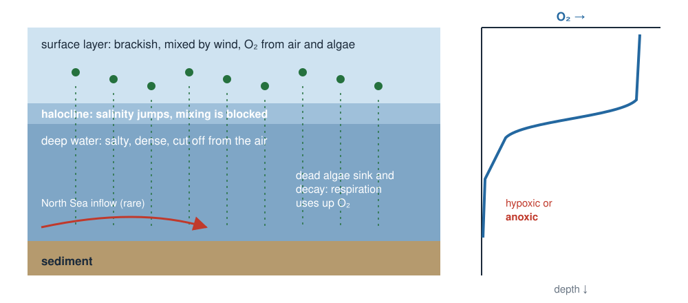
Fresh river water floats on top of salty water from the North Sea. A halocline separates them and blocks mixing. Organic matter sinks through it and decays, using oxygen that cannot be replaced from the air. Salty inflows that refresh the deep water are rare.
What happens when the oxygen is gone?
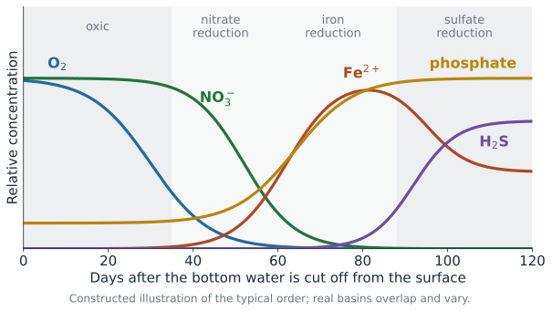
In a cut-off bottom water, chemistry changes in a typical order: first oxygen falls, then nitrate, then dissolved iron and phosphate rise, and finally hydrogen sulfide appears. Nobody added phosphate. Why this order, and where does the phosphate come from?
Redox is electron bookkeeping
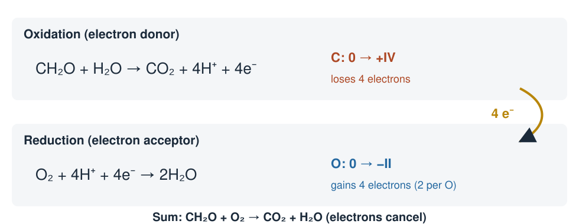
Every redox reaction pairs an electron donor, which is oxidised, with an electron acceptor, which is reduced. Electrons lost = electrons gained. CH₂O is a bookkeeping formula for organic matter, with carbon at oxidation state 0.
Oxidation states you will need
Element
Species
Oxidation state
C
CH₂O / CO₂ / CH₄
0 / +IV / −IV
N
NH₄⁺ / N₂ / NO₃⁻
−III / 0 / +V
Fe
Fe²⁺ / FeOOH
+II / +III
S
HS⁻ / SO₄²⁻
−II / +VI
P
PO₄³⁻
+V (stays)
O
O₂ / H₂O
0 / −II
Rules: H is +I, O is −II (except in O₂), and the states add up to the charge of the species.
Example, nitrate: N + 3(−II) = −1, so N = +V.
Each change of one unit is one electron per atom.
Notice phosphorus. In natural waters it stays at +V. If phosphate moves during a redox change, something else was reduced.
When oxygen runs out: the redox ladder
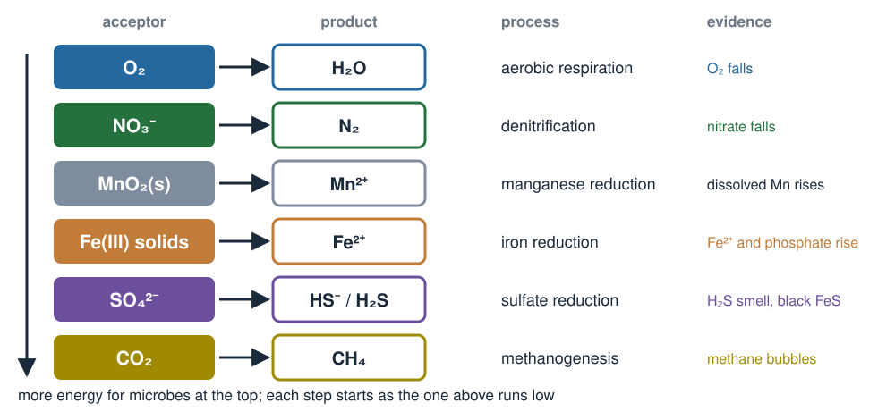
Microbes use the acceptor that gives the most energy first. As it runs low, the next one takes over. That explains the order in the bottom-water series. It is a guide, not a timetable: steps overlap in space and time.
The ladder in the mud
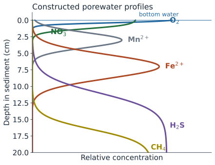
In a sediment, the ladder is laid out in depth. Oxygen often disappears within millimetres. Below it, nitrate, then dissolved manganese and iron, then sulfide and methane.
The steps overlap and their depths change with season and with how much organic matter arrives.
When the bottom water itself loses its oxygen, the upper rungs vanish and iron reduction reaches the sediment surface.
You can see the ladder in a jar
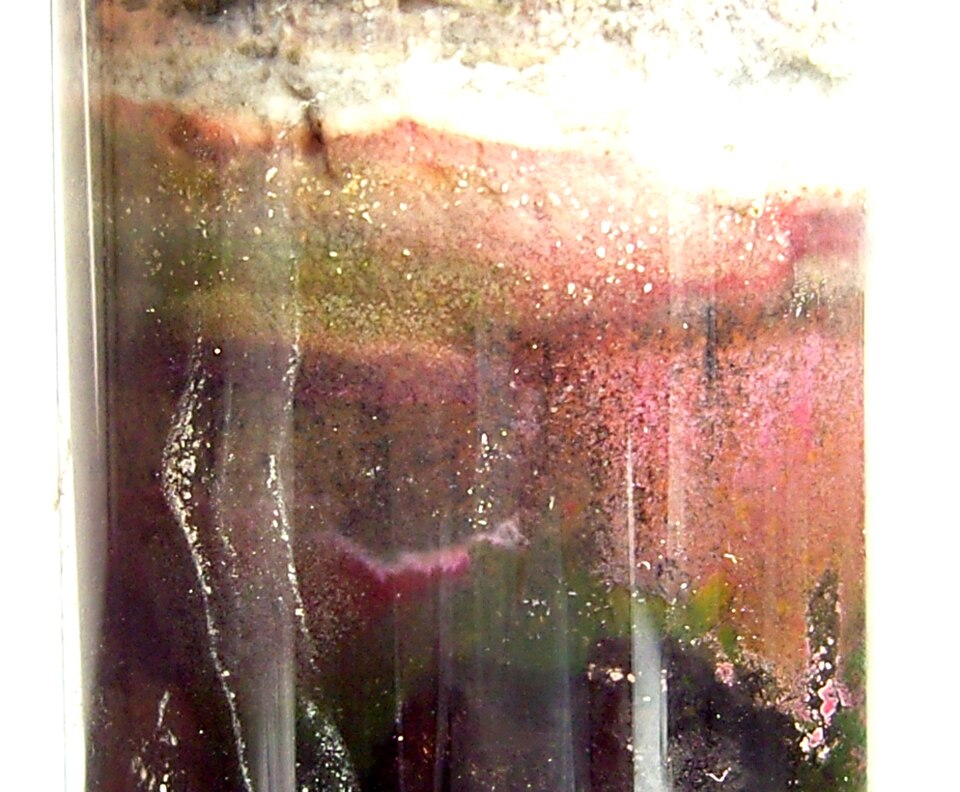
Upper part of a Winogradsky column: purple sulfur bacteria in bands above dark, sulfide-rich mud. Photo: kOchstudiO, public domain, Wikimedia Commons.
A Winogradsky column is a sealed tube of pond mud with a little added carbon and sulfate, left in the light for weeks.
Oxygen enters only at the top, so microbes sort themselves into layers:
the top stays oxic;
in the middle, coloured bands of bacteria live on sulfide rising from below;
the bottom turns black with iron sulfide formed by sulfate reduction.
The same zones exist in every sediment, compressed into a few centimetres.
Nitrogen: one element, many oxidation states
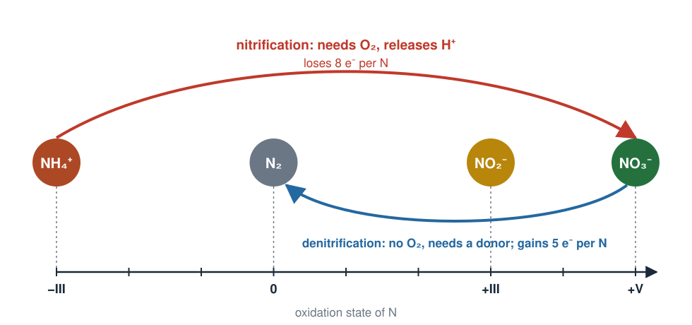
\mathrm{NH_4^++2O_2\rightarrow NO_3^-+2H^++H_2O}
Nitrification uses oxygen and releases acid. For 0.100 mmol/L NH₄⁺: 0.200 mmol/L O₂ (6.40 mg/L) and 0.200 mmol/L H⁺, so alkalinity falls by 0.200 meq/L. Nitrogen changes form but stays in the water.
Atoms: 4 N, 5 C, 14 H, 17 O on each side. Charge: 0 = 0.
Donor ratio: 1.25 mol C per mol nitrate. For 0.0800 mmol/L nitrate: 0.100 mmol/L C (1.20 mg C/L) and 0.0400 mmol/L N₂.
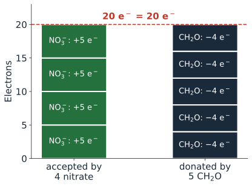
Check yourself
Use oxidation states and electron counting.
What is the oxidation state of S in SO₄²⁻, and of Fe in FeOOH?
How many electrons does one Fe(III) gain when FeOOH becomes Fe²⁺? How many does one sulfate gain when it becomes HS⁻?
Oxidise 0.050 mmol/L NH₄⁺ fully to nitrate. How much O₂ is used?
True or false: “Phosphate rose in anoxic bottom water, so phosphorus was reduced.”
Iron: a solid that dissolves when reduced
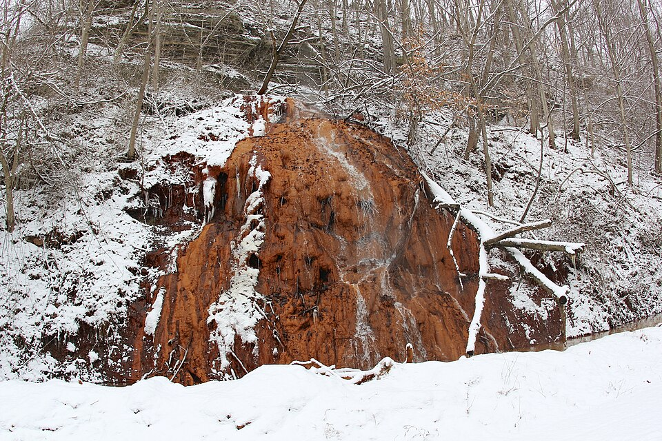
Iron-rich mine water emerging from underground coats a slope with orange iron(III) oxide, Great Allegheny Passage, Pennsylvania. Photo: daveynin, CC BY 2.0, Wikimedia Commons.
Check: 1 Fe, 2 O, 4 H on each side; charge +2 = +2. Fe(III) gains one electron.
Fe(III) oxides are almost insoluble at natural pH. Fe²⁺ is soluble. So reduction turns a solid into a solute.
The reverse happens wherever Fe²⁺-rich water meets air: orange Fe(III) oxide precipitates.
Phosphate rides on iron
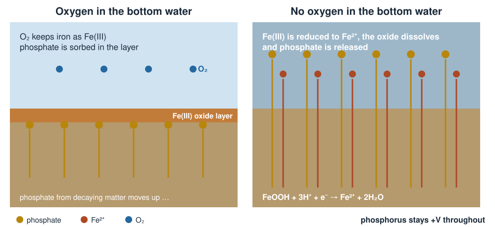
With oxygen, a thin Fe(III) oxide layer at the sediment surface sorbs phosphate moving up from decaying matter. Without oxygen, the iron is reduced, the layer dissolves, and Fe²⁺ and phosphate both escape. Phosphorus stays +V: its carrier changed oxidation state.
Sulfur: the bottom of the ladder
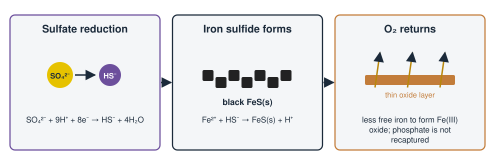
With oxygen, nitrate and iron oxides used up, microbes reduce sulfate, abundant in seawater. Toxic H₂S builds up in the deepest Baltic basins. Sulfide also binds iron as black FeS, so when oxygen returns, less iron is free to recapture phosphate.
Reading redox evidence
Observation: dissolved Fe and phosphate rise while O₂ declines above a sediment.
Coupled explanation: organic matter uses up O₂, then Fe(III) oxides are reduced, releasing Fe²⁺ and the phosphate they held.
Why correlation is not proof: mixing with another water mass, other minerals dissolving, or a new phosphate source could give the same pattern.
Tests: Fe(II) measured directly, solid-phase iron and phosphorus in the sediment, porewater profiles, and fluxes over time.
Back to the Baltic: a self-reinforcing loop
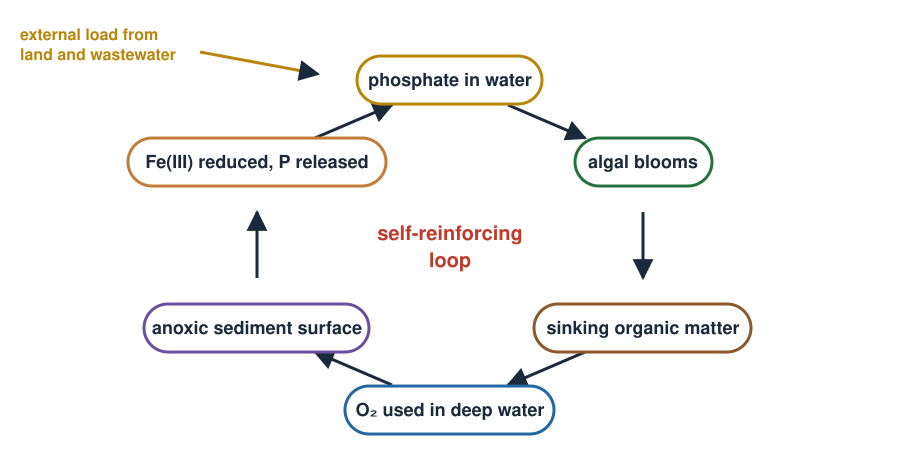
More phosphate feeds more blooms, more sinking organic matter, more oxygen loss, and more phosphate release. That is why internal loading can keep the Baltic eutrophic long after external loads are cut.
Can the loop be broken?
Inflows of oxygen-rich North Sea water, like the large one in December 2014, can ventilate the deep basins for a while. Iron oxide re-forms and traps some phosphate. But the effect fades, and sulfide-bound iron is not fully restored.
Cutting external loads is the lasting solution. Since the 1980s, better wastewater treatment around the Baltic has removed much of the phosphorus that rivers and cities once delivered.
How treatment plants do that, and where the phosphorus ends up, is the next lecture.
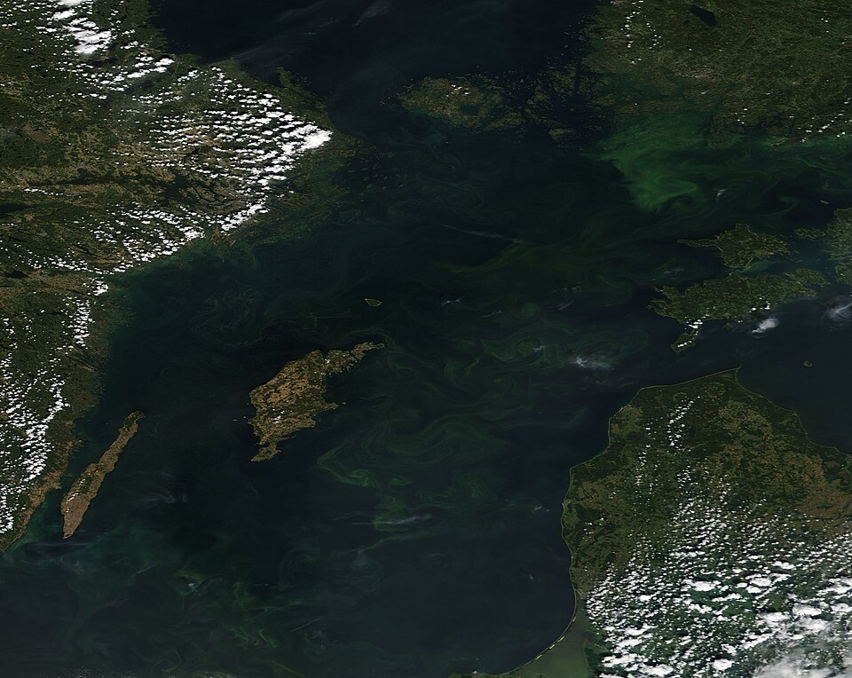
Summer bloom around Gotland in the central Baltic Sea, July 2018. Image: Jeff Schmaltz, NASA (MODIS), public domain, Wikimedia Commons.
Common mistakes to avoid
“Phosphate was released, so phosphorus was reduced.” P stays +V; its iron carrier was reduced.
“Nitrification removes nitrogen.” It changes NH₄⁺ to NO₃⁻; only denitrification sends N to the air.
“The redox ladder is a fixed timetable.” It is a guide; steps overlap.
“Balance atoms and you are done.” Check electrons and charge too.
“One redox-potential reading identifies the process.” Use several indicators.
“Adding oxygen reverses everything.” Sulfide-bound iron and slow reactions leave a legacy.
Explore: the electron-acceptor ladder
Reference case: 0.500 mmol C/L decomposed uses up O₂, nitrate and the Fe(III) oxide, releasing 0.020 mmol/L phosphate.
 Phytoplankton bloom swirling in the Baltic Sea, July 2025, seen by a Landsat satellite. Image: NASA Earth Observatory (Michala Garrison), public domain, Wikimedia Commons.
Phytoplankton bloom swirling in the Baltic Sea, July 2025, seen by a Landsat satellite. Image: NASA Earth Observatory (Michala Garrison), public domain, Wikimedia Commons. Surface aerator in the aeration tank of an activated sludge plant. Photo: Marcos von Sperling, CC BY-SA 4.0, Wikimedia Commons.
Surface aerator in the aeration tank of an activated sludge plant. Photo: Marcos von Sperling, CC BY-SA 4.0, Wikimedia Commons.